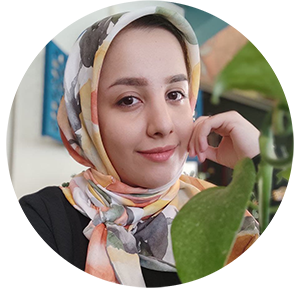

About Me :)

a python developer interested in robotics and machine learning.
I’m very passionate about learning new technologies.
EDUCATION:
Shariaty Technical College
2016 - 2020 -- iran,tehran
bachelor degree in computer engineering
Grade: 18.4
FIND ME ONLINE:
Work
MY EXPERIENCE:
- PYTHON DEVELOPER
BMN & IOT ACADEMY
2020 - 2021
- Worked with BMN (National Elites Foundation of Iran) with 8 members
and developed an intelligent "web application" in agriculture field
- Build gateway and nodes using "Raspberry Pi" and "Arduino"
- IMAGE PROCESSING
UNIVERSITY THESIS
2019 - 2020
- Worked on hand gesture detection on "Raspberry Pi" with python
"OpenCV"
- Improve the code and make own dataset model with "Tensorflow"
- PERSONAL PROJECT
2020 - now
Worked on some projects to improve my skills
Like:
-
SnappChat app with Image processing
-
Measure temperature and humidity with Arduino and send data to a web app
-
Dashboard app to control agricultural land and farm data
-
etc ...
You can see my projects on GitHub
MY SKILLS:
Python | Django | Django REST Api |
Image Processing | Opencv | TensorFlow |
Machine Learning | Numpy | PandasMatplotlib | Neural Network | MySQL |
Linux | UML | Software Architecture |
Git
----------------------------------------------------
Raspberry Pi | Arduino | Arduino IDE | ESP8266 | MicroPython | C++ | C# | C | MQTT | Thingspeak IOT Platform
Contact Me :)
m.aliazam77@gmail.com
09195626306